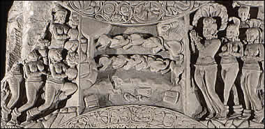

River Scene with Tree Spirit and Worshippers
The Buddha achieved Enlightenment in a forest near a river in north-east India (called the Phalgu River today). This scene shows the river at the centre with a line of footprints across it representing Siddhartha. On the right side of the scene is a hand reaching out to Siddhartha as he crosses the river. There are also two lines of geese flying above the river and worshippers on either side of the scene. |